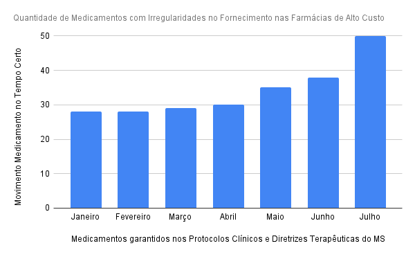

Sobre o Projeto
O LSTS foi criado com o intuito de solucionar a necessidade da população em terem maior acesso as informações relacionadas ao estoque de medicamentos das farmácias do SUS, foi criado um programa que possibilita o cadastro das farmácias, permitindo o acesso ao estoque para a população. Deste modo, os usuários através do programa, podem consultar a quantidade de medicamentos e quais unidades estão disponíveis, a fim de prevenir viagens desnecessárias e otimizar a distribuição de dessas informações.
Como é demostrado no gráfico acima, a quantidade de remédios disponíveis em unidades do SUS foi diminuindo com o decorrer da pandemia, porêm o lucro foi aumentando como é demonstrado abaixo: